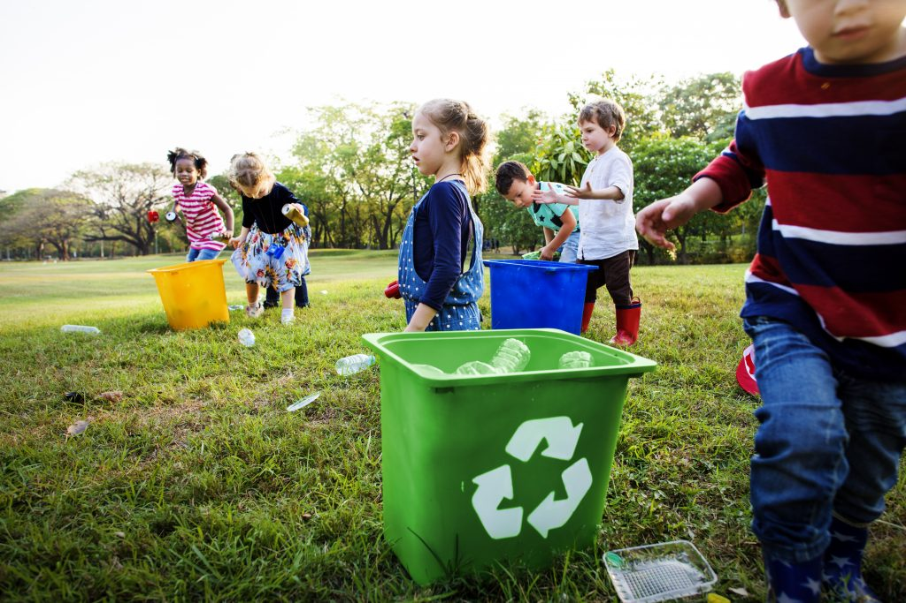
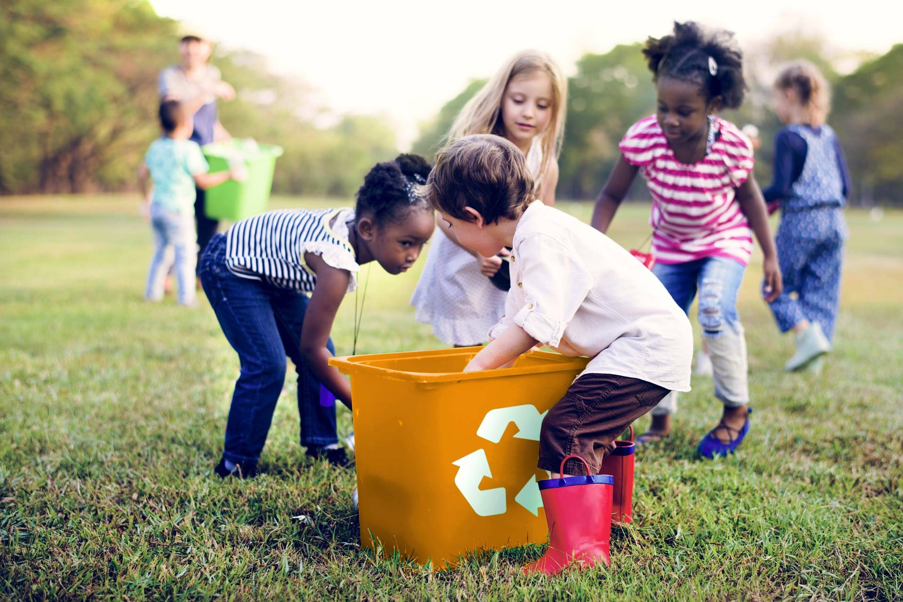
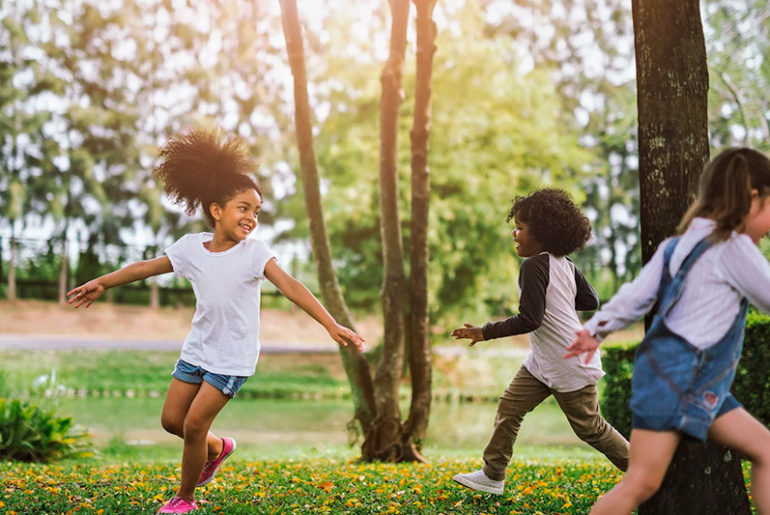
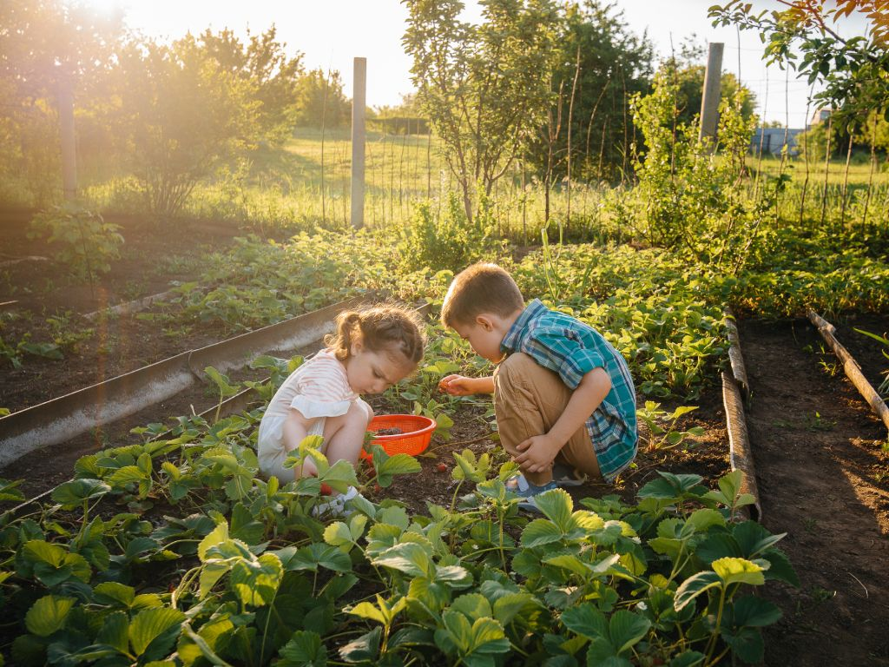

Por que Ensinar Sustentabilidade para Crianças?
Ensinar sustentabilidade desde cedo é plantar a semente para um futuro mais verde e consciente! Crianças da pré-escola são curiosas e adoram aprender sobre o mundo ao seu redor. Ao introduzir conceitos de cuidado com o meio ambiente de forma divertida e prática, estamos formando cidadãos responsáveis que valorizam a natureza e entendem a importância de proteger nosso planeta.
Nesta página, vamos explorar como podemos tornar a sustentabilidade uma parte empolgante da rotina escolar dos nossos pequenos heróis!

As Lixeiras Coloridas: Onde cada lixo tem seu lugar!
Uma das formas mais visuais e práticas de ensinar sobre sustentabilidade é através da separação do lixo. Apresentar as lixeiras coloridas de forma lúdica ajuda as crianças a entenderem que nem todo lixo é igual e que cada tipo tem um destino certo. Vamos conhecer as principais cores e o que jogar em cada uma?
Papel
Aqui vai todo o papel que não usamos mais: folhas de caderno, caixas de papelão, jornais. Podemos transformar tudo isso em papel novo!
Plástico
Garrafas de plástico, potes de iogurte, embalagens de brinquedos... o plástico vai para cá! Assim, ele pode virar outros objetos e não polui a natureza.
Vidro
Garrafas de vidro, potes de geleia... o vidro é muito especial e pode ser reciclado muitas e muitas vezes, mas com um certo cuidado!
Metal
Latinhas de refrigerante, de milho, de sardinha... o metal também tem seu lugar e pode ser transformado em outras coisas se reciclado da devida forma
Orgânico
Restinhos de comida, cascas de frutas, folhas secas... o lixo orgânico vira adubo para as plantas crescerem fortes e bonitas!
Dica: Em sala de aula, coloque mini lixeiras coloridas e incentive as crianças a separarem o lixo que produzirem. Crie cartazes com desenhos dos itens que vão em cada lixeira!
Jogos e Dinâmicas Sustentáveis para a Pré-Escola
A melhor forma de aprender é brincando! Aqui estão algumas ideias de jogos e atividades que tornam a sustentabilidade divertida e memorável para os pequenos:
1. Caça ao Tesouro do Reciclado
Como jogar: Esconda diferentes tipos de "lixo" (embalagens vazias limpas de plástico, papel, metal) pela sala ou pátio. Dê para cada criança uma "cesta de reciclagem" (pode ser uma caixa com a cor de uma lixeira) e peça para encontrarem os tesouros e colocarem na cesta correta. Você pode fazer com que a criança que acertar mais itens na lixeira correta ganhe um "selo de super herói do planeta"!
2. O Desfile das Embalagens Criativas
Como fazer: Peça para as crianças trazerem de casa embalagens vazias e limpas (caixas de leite, rolos de papel higiênico, garrafas PET). Em sala, disponibilize materiais como tinta, cola, tesoura sem ponta, retalhos de tecido. Incentive-as a transformarem essas embalagens em brinquedos, robôs, casinhas para bonecas. No final, façam um "desfile" das criações!
3. A Música da Árvore Mágica
Como brincar: Crie uma música simples sobre o ciclo da vida, a importância da água, o sol e as plantas. Enquanto cantam, as crianças podem imitar os gestos de plantar uma semente, regar, ver a árvore crescer. Esta dinâmica ajuda a conectar as crianças com a natureza e o processo de crescimento.
4. Pequenos Jardineiros
Atividade prática: Monte um pequeno canteiro ou vasinhos na escola. As crianças podem participar de todas as etapas: preparar a terra, plantar sementes ou mudas pequenas (ervas como manjericão ou sementes de feijão crescem rápido e são visíveis), regar e observar o crescimento. Ensine sobre a importância da água e da luz solar.
Dicas para Educadores e Pais
- Seja o exemplo: As crianças aprendem muito observando. Mostre a elas suas próprias atitudes sustentáveis.
- Linguagem simples e lúdica: Use palavras que elas entendam e transforme tudo em brincadeira.
- Rotina e repetição: Incorpore os hábitos sustentáveis no dia a dia da escola.
- Conexão com a natureza: Leve as crianças para o ar livre, parques, para que toquem na terra, observem as plantas e os animais.
- Celebre as pequenas vitórias: Elogie e celebre quando as crianças fizerem algo sustentável.
- Envolver a família: Compartilhe com os pais as atividades e a importância de continuarem em casa.